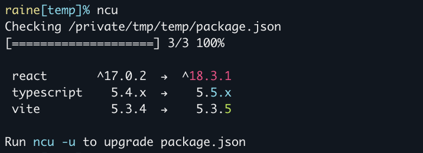
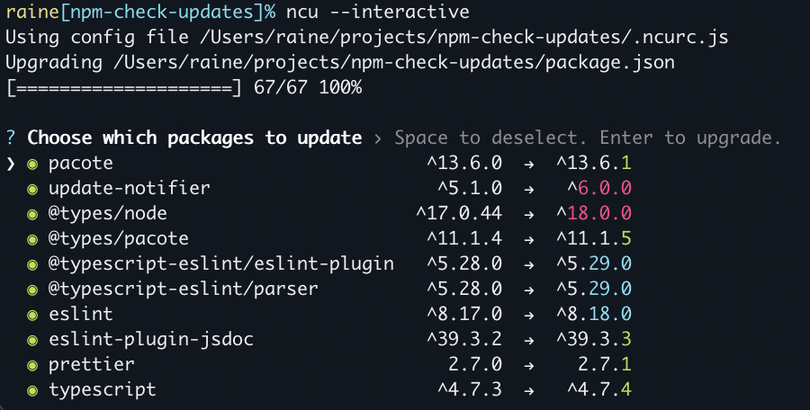
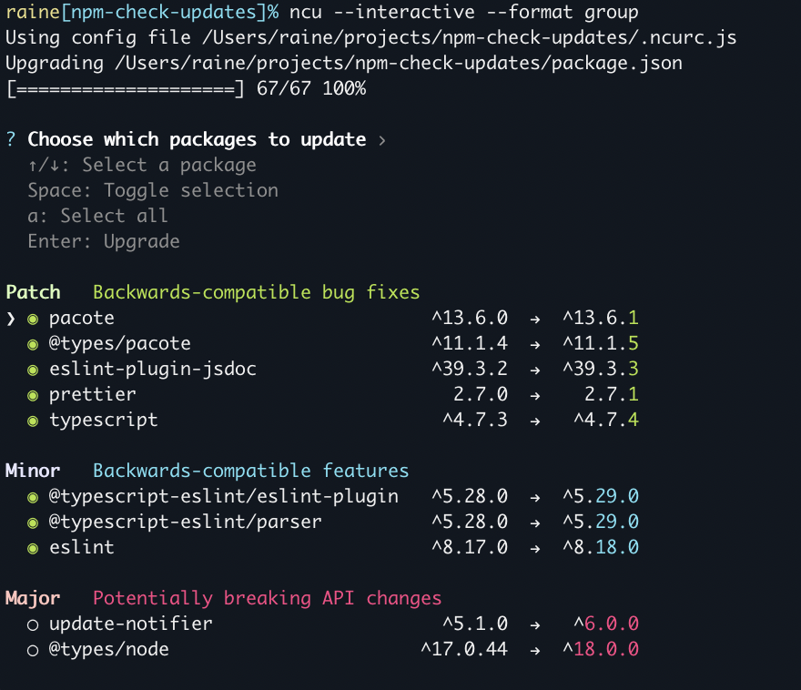

npm-check-updates
npm-check-updates upgrades your package.json dependencies to the latest versions, ignoring specified versions.
- maintains existing semantic versioning policies, i.e.
"react": "^17.0.2"to"react": "^18.3.1". - only modifies package.json file. Run
npm installto update your installed packages and package-lock.json. - sensible defaults, but highly customizable
- compatible with npm, yarn, pnpm, deno, and bun
- CLI and module usage

${\color{red}Red}$ major upgrade (and all major version zero)
${\color{cyan}Cyan}$ minor upgrade
${\color{green}Green}$ patch upgrade
Installation
Install globally to use npm-check-updates or the shorter ncu:
npm install -g npm-check-updates
Or run with npx (only the long form is supported):
npx npm-check-updates
Usage
Check the latest versions of all project dependencies:
$ ncu
Checking package.json
[====================] 5/5 100%
eslint 7.32.0 → 8.0.0
prettier ^2.7.1 → ^3.0.0
svelte ^3.48.0 → ^3.51.0
typescript >3.0.0 → >4.0.0
untildify <4.0.0 → ^4.0.0
webpack 4.x → 5.x
Run ncu -u to upgrade package.json
Upgrade a project’s package file:
Make sure your package file is in version control and all changes have been committed. This will overwrite your package file.
$ ncu -u
Upgrading package.json
[====================] 1/1 100%
express 4.12.x → 4.13.x
Run npm install to install new versions.
$ npm install # update installed packages and package-lock.json
Check global packages:
ncu -g
Interactive Mode
Choose which packages to update in interactive mode:
ncu --interactive
ncu -i

Combine with --format group for a truly luxe experience:

Keys
- ↑↓ Select a package
- Space Toggle selection
- a Toggle all
- Enter Upgrade
Filter packages
Filter packages using the --filter option or adding additional cli arguments:
# upgrade only mocha
ncu mocha
ncu -f mocha
ncu --filter mocha
# upgrade only chalk, mocha, and react
ncu chalk mocha react
ncu chalk, mocha, react
ncu -f "chalk mocha react"
Filter with wildcards or regex:
# upgrade packages that start with "react-"
ncu react-*
ncu "/^react-.*$/"
Exclude specific packages with the --reject option or prefixing a filter with !. Supports strings, wildcards, globs, comma-or-space-delimited lists, and regex:
# upgrade everything except nodemon
ncu \!nodemon
ncu -x nodemon
ncu --reject nodemon
# upgrade packages that do not start with "react-".
ncu \!react-*
ncu '/^(?!react-).*$/' # mac/linux
ncu "/^(?!react-).*$/" # windows
Advanced filters: filter, filterResults, filterVersion
How dependency updates are determined
- Direct dependencies are updated to the latest stable version:
2.0.1→2.2.01.2→1.30.1.0→1.0.1
- Range operators are preserved and the version is updated:
^1.2.0→^2.0.01.x→2.x>0.2.0→>0.3.0
- “Less than” is replaced with a wildcard:
<2.0.0→^3.0.01.0.0 < 2.0.0→^3.0.0
- “Any version” is preserved:
*→*
- Prerelease versions are ignored by default.
- Use
--preto include prerelease versions (e.g.alpha,beta,build1235)
- Use
- Choose what level to upgrade to:
- With
--target semver, update according to your specified semver version ranges:^1.1.0→^1.9.99
- With
--target minor, strictly update the patch and minor versions (including major version zero):0.1.0→0.2.1
- With
--target patch, strictly update the patch version (including major version zero):0.1.0→0.1.2
- With
--target @next, update to the version published on thenexttag:0.1.0->0.1.1-next.1
- With
Options
Options are merged with the following precedence:
- Command line options
- Local Config File (current working directory)
- Project Config File (next to package.json)
- User Config File (
$HOME)
Options that take no arguments can be negated by prefixing them with --no-, e.g. --no-peer.
| --cache | Cache versions to a local cache file. Default --cacheFile is ~/.ncu-cache.json and default --cacheExpiration is 10 minutes. |
| --cacheClear | Clear the default cache, or the cache file specified by --cacheFile. |
| --cacheExpiration <min> | Cache expiration in minutes. Only works with --cache. (default: 10) |
| --cacheFile <path> | Filepath for the cache file. Only works with --cache. (default: "~/.ncu-cache.json") |
| --color | Force color in terminal. |
| --concurrency <n> | Max number of concurrent HTTP requests to registry. (default: 8) |
| --configFileName <s> | Config file name. (default: .ncurc.{json,yml,js,cjs}) |
| --configFilePath <path> | Directory of .ncurc config file. (default: directory of packageFile) |
| -c, --cooldown <period> | Sets a minimum age for package versions to be considered for upgrade. Accepts a number (days) or a string with a unit: "7d" (days), "12h" (hours), "30m" (minutes). Reduces the risk of installing newly published, potentially compromised packages. |
| --cwd <path> | Working directory in which npm will be executed. |
| --deep | Run recursively in current working directory. Alias of (--packageFile '**/package.json'). |
| --dep <value> | Check one or more sections of dependencies only: dev, optional, peer, prod, or packageManager (comma-delimited). (default: ["prod","dev","optional","packageManager"]) |
| --deprecated | Include deprecated packages. Use --no-deprecated to exclude deprecated packages (20–25% slower). (default: true) |
| -d, --doctor | Iteratively installs upgrades and runs tests to identify breaking upgrades. Requires -u to execute. |
| --doctorInstall <command> | Specifies the install script to use in doctor mode. (default: npm install or the equivalent for your package manager) |
| --doctorTest <command> | Specifies the test script to use in doctor mode. (default: npm test) |
| --enginesNode | Include only packages that satisfy engines.node as specified in the package file. |
| -e, --errorLevel <n> | Set the error level. 1: exits with error code 0 if no errors occur. 2: exits with error code 0 if no packages need updating (useful for continuous integration). (default: 1) |
| -f, --filter <p> | Include only package names matching the given string, wildcard, glob, comma-or-space-delimited list, /regex/, or predicate function. |
| filterResults <fn> | Filters results based on a user provided predicate function after fetching new versions. |
| --filterVersion <p> | Filter on package version using comma-or-space-delimited list, /regex/, or predicate function. |
| --format <value> | Modify the output formatting or show additional information. Specify one or more comma-delimited values: dep, group, ownerChanged, repo, time, lines, installedVersion. (default: []) |
| -g, --global | Check global packages instead of in the current project. |
| groupFunction <fn> | Customize how packages are divided into groups when using --format group. |
| --install <value> | Control the auto-install behavior: always, never, prompt. (default: "prompt") |
| -i, --interactive | Enable interactive prompts for each dependency; implies -u unless one of the json options are set. |
| -j, --jsonAll | Output new package file instead of human-readable message. |
| --jsonDeps | Like jsonAll but only lists dependencies, devDependencies, optionalDependencies, etc of the new package data. |
| --jsonUpgraded | Output upgraded dependencies in json. |
| -l, --loglevel <n> | Amount to log: silent, error, minimal, warn, info, verbose, silly. (default: "warn") |
| --mergeConfig | Merges nested configs with the root config file for --deep or --packageFile options. (default: false) |
| -m, --minimal | Do not upgrade newer versions that are already satisfied by the version range according to semver. |
| --packageData <value> | Package file data (you can also use stdin). |
| --packageFile <path|glob> | Package file(s) location. (default: ./package.json) |
| -p, --packageManager <s> | npm, yarn, pnpm, deno, bun, staticRegistry (default: npm). |
| --peer | Check peer dependencies of installed packages and filter updates to compatible versions. |
| --pre <n> | Include prerelease versions, e.g. -alpha.0, -beta.5, -rc.2. Automatically set to 1 when --target is newest or greatest, or when the current version is a prerelease. (default: 0) |
| --prefix <path> | Current working directory of npm. |
| -r, --registry <uri> | Specify the registry to use when looking up package versions. |
| --registryType <type> | Specify whether --registry refers to a full npm registry or a simple JSON file or url: npm, json. (default: npm) |
| -x, --reject <p> | Exclude packages matching the given string, wildcard, glob, comma-or-space-delimited list, /regex/, or predicate function. |
| --rejectVersion <p> | Exclude package.json versions using comma-or-space-delimited list, /regex/, or predicate function. |
| --removeRange | Remove version ranges from the final package version. |
| --retry <n> | Number of times to retry failed requests for package info. (default: 3) |
| --root | Runs updates on the root project in addition to specified workspaces. Only allowed with --workspace or --workspaces. (default: true) |
| -s, --silent | Don't output anything. Alias for --loglevel silent. |
| --stdin | Read package.json from stdin. |
| -t, --target <value> | Determines the version to upgrade to: latest, newest, greatest, minor, patch, semver, @[tag], or [function]. (default: latest) |
| --timeout <ms> | Global timeout in milliseconds. (default: no global timeout and 30 seconds per npm-registry-fetch) |
| -u, --upgrade | Overwrite package file with upgraded versions instead of just outputting to console. |
| --verbose | Log additional information for debugging. Alias for --loglevel verbose. |
| --workspace <s> | Run on one or more specified workspaces. Add --no-root to exclude the root project. (default: []) |
| -w, --workspaces | Run on all workspaces. Add --no-root to exclude the root project. |
Advanced Options
Some options have advanced usage, or allow per-package values by specifying a function in your .ncurc.js file.
Run ncu --help [OPTION] to view advanced help for a specific option, or see below:
cooldown
Usage:
ncu --cooldown [period]
ncu -c [period]
The cooldown option helps protect against supply chain attacks by requiring package versions to be published at least the given amount of time before considering them for upgrade.
The value can be a plain number (days) or a string with a unit suffix:
--cooldown 7 7 days
--cooldown 7d 7 days (same as above)
--cooldown 12h 12 hours
--cooldown 30m 30 minutes
Note that previous stable versions will not be suggested. The package will be completely ignored if its latest published version is within the cooldown period. This is due to a limitation of the npm registry, which does not provide a way to query previous stable versions.
Example:
Let’s examine how cooldown works with a package that has these versions available:
1.0.0 Released 7 days ago (initial version)
1.1.0 Released 6 days ago (minor update)
1.1.1 Released 5 days ago (patch update)
1.2.0 Released 5 days ago (minor update)
2.0.0-beta.1 Released 5 days ago (beta release)
1.2.1 Released 4 days ago (patch update)
1.3.0 Released 4 days ago (minor update) [latest]
2.0.0-beta.2 Released 3 days ago (beta release)
2.0.0-beta.3 Released 2 days ago (beta release) [beta]
With default target (latest):
$ ncu --cooldown 5
No update will be suggested because:
- Latest version (1.3.0) is only 4 days old.
- Cooldown requires versions to be at least 5 days old
- Use
--cooldown 4or lower to allow this update
With @beta/@tag target:
$ ncu --cooldown 3 --target @beta
No update will be suggested because:
- Current beta (2.0.0-beta.3) is only 2 days old
- Cooldown requires versions to be at least 3 days old
- Use
--cooldown 2or lower to allow this update
With other targets:
$ ncu --cooldown 5 --target greatest|newest|minor|patch|semver
Each target will select the best version that is at least 5 days old:
greatest → 1.2.0 (highest version number outside cooldown)
newest → 2.0.0-beta.1 (most recently published version outside cooldown)
minor → 1.2.0 (highest minor version outside cooldown)
patch → 1.1.1 (highest patch version outside cooldown)
Note for latest/tag targets:
:warning: For packages that update frequently (e.g. daily releases), using a long cooldown period (7+ days) with the default
--target latestor--target @tagmay prevent all updates since new versions will be published before older ones meet the cooldown requirement. Please consider this when setting your cooldown period.
You can also provide a custom function in your .ncurc.js file or when importing npm-check-updates as a module.
:warning: The predicate function is only available in .ncurc.js or when importing npm-check-updates as a module, not on the command line. To convert a JSON config to a JS config, follow the instructions at https://github.com/raineorshine/npm-check-updates#config-functions.
/** Set cooldown to 3 days but skip it for `@my-company` packages.
@param packageName The name of the dependency.
@returns Cooldown days restriction for given package.
*/
cooldown: packageName => (packageName.startsWith('@my-company') ? 0 : 3)
doctor
Usage:
ncu --doctor -u
ncu --no-doctor
ncu -du
Iteratively installs upgrades and runs your project’s tests to identify breaking upgrades. Reverts broken upgrades and updates package.json with working upgrades.
Requires -u to execute (modifies your package file, lock file, and node_modules)
To be more precise:
- Runs
npm installandnpm testto ensure tests are currently passing. - Runs
ncu -uto optimistically upgrade all dependencies. - If tests pass, hurray!
- If tests fail, restores package file and lock file.
- For each dependency, install upgrade and run tests.
- Prints broken upgrades with test error.
- Saves working upgrades to package.json.
Additional options:
| --doctorInstall | specify a custom install script (default: `npm install` or `yarn`) |
| --doctorTest | specify a custom test script (default: `npm test`) |
Example:
$ ncu --doctor -u
Running tests before upgrading
npm install
npm run test
Upgrading all dependencies and re-running tests
ncu -u
npm install
npm run test
Tests failed
Identifying broken dependencies
npm install
npm install --no-save react@16.0.0
npm run test
✓ react 15.0.0 → 16.0.0
npm install --no-save react-redux@7.0.0
npm run test
✗ react-redux 6.0.0 → 7.0.0
/projects/myproject/test.js:13
throw new Error('Test failed!')
^
npm install --no-save react-dnd@11.1.3
npm run test
✓ react-dnd 10.0.0 → 11.1.3
Saving partially upgraded package.json
filter
Usage:
ncu --filter [p]
ncu -f [p]
Include only package names matching the given string, wildcard, glob, comma-or-space-delimited list, /regex/, or predicate function. Only included packages will be checked with --peer.
--filter runs before new versions are fetched, in contrast to --filterResults which runs after.
You can also specify a custom function in your .ncurc.js file, or when importing npm-check-updates as a module.
:warning: The predicate function is only available in .ncurc.js or when importing npm-check-updates as a module, not on the command line. To convert a JSON config to a JS config, follow the instructions at https://github.com/raineorshine/npm-check-updates#config-functions.
/**
@param name The name of the dependency.
@param semver A parsed Semver array of the current version.
(See: https://git.coolaj86.com/coolaj86/semver-utils.js#semverutils-parse-semverstring)
@returns True if the package should be included, false if it should be excluded.
*/
filter: (name, semver) => {
if (name.startsWith('@myorg/')) {
return false
}
return true
}
filterResults
Filters results based on a user provided predicate function after fetching new versions.
filterResults runs after new versions are fetched, in contrast to filter, reject, filterVersion, and rejectVersion, which run before. This allows you to exclude upgrades with filterResults based on how the version has changed (e.g. a major version change).
:warning: The predicate function is only available in .ncurc.js or when importing npm-check-updates as a module, not on the command line. To convert a JSON config to a JS config, follow the instructions at https://github.com/raineorshine/npm-check-updates#config-functions.
/** Exclude major version updates. Note this could also be achieved with --target semver.
@param {string} packageName The name of the dependency.
@param {string} current Current version declaration (may be a range).
@param {SemVer[]} currentVersionSemver Current version declaration in semantic versioning format (may be a range).
@param {string} upgraded Upgraded version.
@param {SemVer} upgradedVersionSemver Upgraded version in semantic versioning format.
@returns {boolean} Return true if the upgrade should be kept; otherwise, it will be ignored.
*/
filterResults: (packageName, { current, currentVersionSemver, upgraded, upgradedVersionSemver }) => {
const currentMajor = parseInt(currentVersionSemver[0]?.major, 10)
const upgradedMajor = parseInt(upgradedVersionSemver?.major, 10)
if (currentMajor && upgradedMajor) {
return currentMajor >= upgradedMajor
}
return true
}
For the SemVer type definition, see: https://git.coolaj86.com/coolaj86/semver-utils.js#semverutils-parse-semverstring
filterVersion
Usage:
ncu --filterVersion [p]
Include only versions matching the given string, wildcard, glob, comma-or-space-delimited list, /regex/, or predicate function.
--filterVersion runs before new versions are fetched, in contrast to --filterResults which runs after.
You can also specify a custom function in your .ncurc.js file, or when importing npm-check-updates as a module.
:warning: The predicate function is only available in .ncurc.js or when importing npm-check-updates as a module, not on the command line. To convert a JSON config to a JS config, follow the instructions at https://github.com/raineorshine/npm-check-updates#config-functions. This function is an alias for the
filteroption function.
/**
@param name The name of the dependency.
@param semver A parsed Semver array of the current version.
(See: https://git.coolaj86.com/coolaj86/semver-utils.js#semverutils-parse-semverstring)
@returns True if the package should be included, false if it should be excluded.
*/
filterVersion: (name, semver) => {
if (name.startsWith('@myorg/') && parseInt(semver[0]?.major) > 5) {
return false
}
return true
}
format
Usage:
ncu --format [value]
Modify the output formatting or show additional information. Specify one or more comma-delimited values.
| dep | Prints the dependency type (dev, peer, optional) of each package. |
| group | Groups packages by major, minor, patch, and major version zero updates. |
| homepage | Displays links to the package's homepage if specified in its package.json. |
| installedVersion | Prints the exact current version number instead of a range. |
| lines | Prints name@version on separate lines. Useful for piping to npm install. |
| ownerChanged | Shows if the package owner has changed. |
| repo | Infers and displays links to the package's source code repository. Requires packages to be installed. |
| diff | Display link to compare the changes between package versions. |
| time | Shows the publish time of each upgrade. |
groupFunction
Customize how packages are divided into groups when using --format group.
Only available in .ncurc.js or when importing npm-check-updates as a module, not on the command line. To convert a JSON config to a JS config, follow the instructions at https://github.com/raineorshine/npm-check-updates#config-functions.
/**
@param name The name of the dependency.
@param defaultGroup The predefined group name which will be used by default.
@param currentSpec The current version range in your package.json.
@param upgradedSpec The upgraded version range that will be written to your package.json.
@param upgradedVersion The upgraded version number returned by the registry.
@returns A predefined group name ('major' | 'minor' | 'patch' | 'majorVersionZero' | 'none') or a custom string to create your own group.
*/
groupFunction: (name, defaultGroup, currentSpec, upgradedSpec, upgradedVersion) => {
if (name === 'typescript' && defaultGroup === 'minor') {
return 'major'
}
if (name.startsWith('@myorg/')) {
return 'My Org'
}
return defaultGroup
}
install
Usage:
ncu --install [value]
Default: prompt
Control the auto-install behavior.
| always | Runs your package manager's install command automatically after upgrading. |
| never | Does not install and does not prompt. |
| prompt | Shows a message after upgrading that recommends an install, but does not install. In interactive mode, prompts for install. (default) |
packageManager
Usage:
ncu --packageManager [s]
ncu -p [s]
Specifies the package manager to use when looking up versions.
| npm | System-installed npm. Default. |
| yarn | System-installed yarn. Automatically used if yarn.lock is present. |
| pnpm | System-installed pnpm. Automatically used if pnpm-lock.yaml is present. |
| bun | System-installed bun. Automatically used if bun.lock or bun.lockb is present. |
peer
Usage:
ncu --peer
ncu --no-peer
Check peer dependencies of installed packages and filter updates to compatible versions.
Example:
The following example demonstrates how --peer works, and how it uses peer dependencies from upgraded modules.
The package ncu-test-peer-update has two versions published:
- 1.0.0 has peer dependency
"ncu-test-return-version": "1.0.x" - 1.1.0 has peer dependency
"ncu-test-return-version": "1.1.x"
Our test app has the following dependencies:
"ncu-test-peer-update": "1.0.0",
"ncu-test-return-version": "1.0.0"
The latest versions of these packages are:
"ncu-test-peer-update": "1.1.0",
"ncu-test-return-version": "2.0.0"
With --peer:
ncu upgrades packages to the highest version that still adheres to the peer dependency constraints:
ncu-test-peer-update 1.0.0 → 1.1.0
ncu-test-return-version 1.0.0 → 1.1.0
Without --peer:
As a comparison: without using the --peer option, ncu will suggest the latest versions, ignoring peer dependencies:
ncu-test-peer-update 1.0.0 → 1.1.0
ncu-test-return-version 1.0.0 → 2.0.0
registryType
Usage:
ncu --registryType [type]
Specify whether --registry refers to a full npm registry or a simple JSON file.
| npm | Default npm registry |
| json | Checks versions from a file or url to a simple JSON registry. Must include the `--registry` option. Example: // local file $ ncu --registryType json --registry ./registry.json // url $ ncu --registryType json --registry https://api.mydomain/registry.json // you can omit --registryType when the registry ends in .json $ ncu --registry ./registry.json $ ncu --registry https://api.mydomain/registry.json registry.json: { "prettier": "2.7.1", "typescript": "4.7.4" } |
reject
Usage:
ncu --reject [p]
ncu -x [p]
The inverse of --filter. Exclude package names matching the given string, wildcard, glob, comma-or-space-delimited list, /regex/, or predicate function. This will also exclude them from the --peer check.
--reject runs before new versions are fetched, in contrast to --filterResults which runs after.
You can also specify a custom function in your .ncurc.js file, or when importing npm-check-updates as a module.
:warning: The predicate function is only available in .ncurc.js or when importing npm-check-updates as a module, not on the command line. To convert a JSON config to a JS config, follow the instructions at https://github.com/raineorshine/npm-check-updates#config-functions.
/**
@param name The name of the dependency.
@param semver A parsed Semver array of the current version.
(See: https://git.coolaj86.com/coolaj86/semver-utils.js#semverutils-parse-semverstring)
@returns True if the package should be excluded, false if it should be included.
*/
reject: (name, semver) => {
if (name.startsWith('@myorg/')) {
return true
}
return false
}
rejectVersion
Usage:
ncu --rejectVersion [p]
The inverse of --filterVersion. Exclude versions matching the given string, wildcard, glob, comma-or-space-delimited list, /regex/, or predicate function.
--rejectVersion runs before new versions are fetched, in contrast to --filterResults which runs after.
You can also specify a custom function in your .ncurc.js file, or when importing npm-check-updates as a module.
:warning: The predicate function is only available in .ncurc.js or when importing npm-check-updates as a module, not on the command line. To convert a JSON config to a JS config, follow the instructions at https://github.com/raineorshine/npm-check-updates#config-functions. This function is an alias for the reject option function.
/**
@param name The name of the dependency.
@param semver A parsed Semver array of the current version.
(See: https://git.coolaj86.com/coolaj86/semver-utils.js#semverutils-parse-semverstring)
@returns True if the package should be excluded, false if it should be included.
*/
rejectVersion: (name, semver) => {
if (name.startsWith('@myorg/') && parseInt(semver[0]?.major) > 5) {
return true
}
return false
}
target
Usage:
ncu --target [value]
ncu -t [value]
Determines the version to upgrade to. (default: “latest”)
| greatest | Upgrade to the highest version number published, regardless of release date or tag. Includes prereleases. |
| latest | Upgrade to whatever the package's "latest" git tag points to. Excludes prereleases unless --pre is specified. |
| minor | Upgrade to the highest minor version without bumping the major version. |
| newest | Upgrade to the version with the most recent publish date, even if there are other version numbers that are higher. Includes prereleases. |
| patch | Upgrade to the highest patch version without bumping the minor or major versions. |
| semver | Upgrade to the highest version within the semver range specified in your package.json. |
| @[tag] | Upgrade to the version published to a specific tag, e.g. 'next' or 'beta'. |
e.g.
ncu --target semver
You can also specify a custom function in your .ncurc.js file, or when importing npm-check-updates as a module.
:warning: The predicate function is only available in .ncurc.js or when importing npm-check-updates as a module, not on the command line. To convert a JSON config to a JS config, follow the instructions at https://github.com/raineorshine/npm-check-updates#config-functions.
/** Upgrade major version zero to the next minor version, and everything else to latest.
@param name The name of the dependency.
@param semver A parsed Semver object of the upgraded version.
(See: https://git.coolaj86.com/coolaj86/semver-utils.js#semverutils-parse-semverstring)
@returns One of the valid target values (specified in the table above).
*/
target: (name, semver) => {
if (parseInt(semver[0]?.major) === '0') return 'minor'
return 'latest'
}
Config File
Add a .ncurc.{json,yml,js,cjs} file to your project directory to specify configuration information.
For example, .ncurc.json:
{
"upgrade": true,
"filter": "svelte",
"reject": ["@types/estree", "ts-node"]
}
Options are merged with the following precedence:
- Command line options
- Local Config File (current working directory)
- Project Config File (next to package.json)
- User Config File (
$HOME)
You can also specify a custom config file name or path using the --configFileName or --configFilePath command line options.
Config Functions
Some options offer more advanced configuration using a function definition. These include filter, filterVersion, filterResults, reject, rejectVersion, and groupFunction. To define an options function, convert the config file to a JS file by adding the .js extension and setting module.exports:
For example, .ncurc.js:
/** @type {import('npm-check-updates').RcOptions } */
module.exports = {
upgrade: true,
filter: name => name.startsWith('@myorg/'),
}
Alternatively, you can use the defineConfig helper which should provide intellisense without the need for jsdoc annotations:
const { defineConfig } = require('npm-check-updates')
module.exports = defineConfig({
upgrade: true,
filter: name => name.startsWith('@myorg/'),
})
JSON Schema
If you write .ncurc config files using json or yaml, you can add the JSON Schema to your IDE settings for completions.
e.g. for VS Code:
"json.schemas": [
{
"fileMatch": [
".ncurc",
".ncurc.json",
],
"url": "https://raw.githubusercontent.com/raineorshine/npm-check-updates/main/src/types/RunOptions.json"
}
],
"yaml.schemas": {
"https://raw.githubusercontent.com/raineorshine/npm-check-updates/main/src/types/RunOptions.json": [
".ncurc.yml",
]
},
Module/Programmatic Usage
npm-check-updates can be imported as a module:
import ncu from 'npm-check-updates'
const upgraded = await ncu.run({
// Pass any cli option
packageFile: '../package.json',
upgrade: true,
// Defaults:
// jsonUpgraded: true,
// silent: true,
})
console.log(upgraded) // { "mypackage": "^2.0.0", ... }
Contributing
Contributions are happily accepted. I respond to all PR’s and can offer guidance on where to make changes. For contributing tips see CONTRIBUTING.md.
Problems?
File an issue. Please search existing issues first.